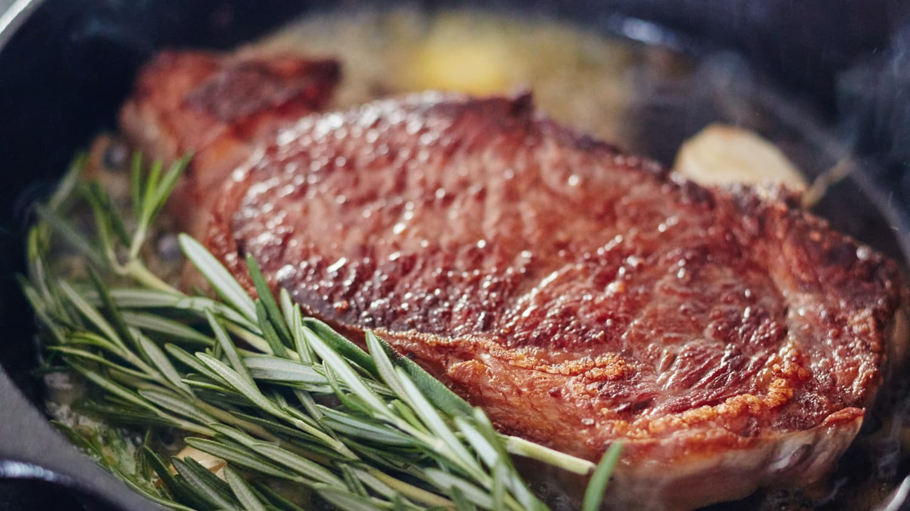

Rosemary Steak Recipe

Description
I have always been a huge steak fan, but this is my go to recipe whenever I have guests
over for dinner. As much as I love a grilled steak, my favorite steak is a ribeye from Ruth's
Chris. Essentialy poached in butter, the steak will have a nice crust and a wonderful aroma from
the rosemary.
It is a consistent, delicious recipe that is nearly foolproof. As long as you follow the directions
precisely with a timer and use a flatiron pan, then you will have a perfect medium rare steak every time. I'm getting hungry just thinking
about it!
Ingredients
- 16oz Ribeye, cut about 1.5 inches thick
- 1 tbsp vegetable oil (or any high smoke point oil)
- 2 tbsp butter
- 2 sprigs fresh rosemary
- salt and fresh-ground pepper
Steps
- Heat a flatiron pan over a medium high burner for about 10 minutes, so that it gets very hot.
- While the pan is heating, dry the outside of the Ribeye and season with salt and pepper to taste.
- After the pan is heated, put the cooking oil in the pan and allow to heat for about ten seconds.
- Place the steak in the pan and start your timer. You will now flip the steak every minute with a pair of tongs.
- After 4 minutes have elapsed, pick the steak up and place the butter in the pan, giving it about 30 seconds to melt.
- Place the steak back in the pan and place the rosemary to the sides of the steak. Continue to flip every minute for another 4 minutes
- Pull the steak out and place it on a paper towel. Tent with foil and allow it to rest for about 5-7 minutes.
- The steak is now ready to be enjoyed with your favorite sides! You might consider cooking some kale in the same pan with some lemon.